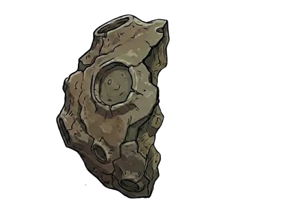
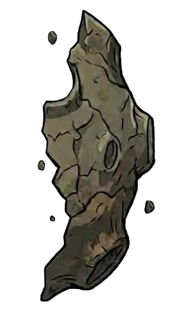
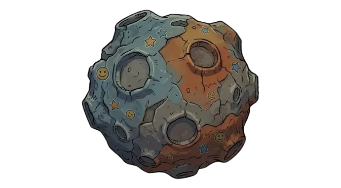
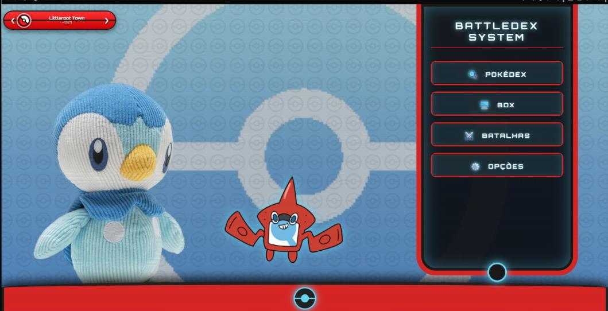
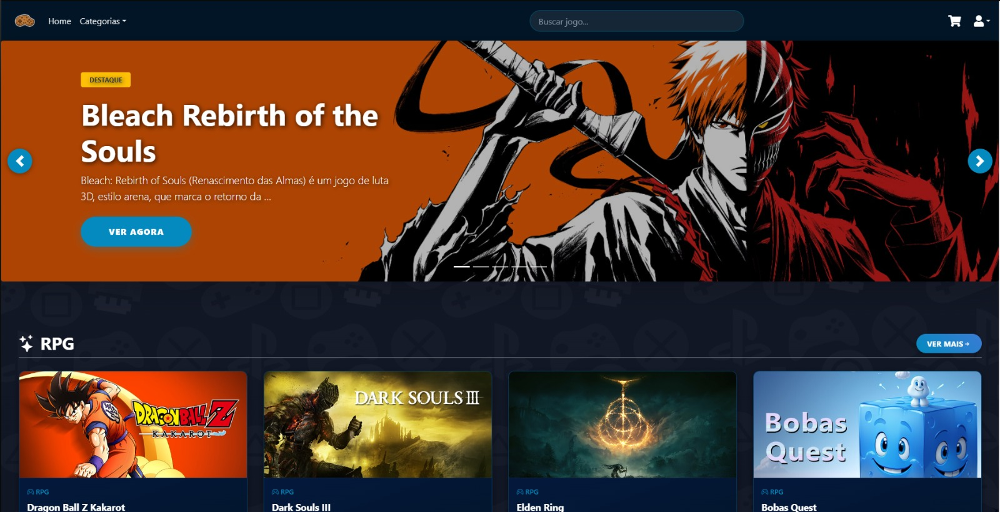

Olá, eu sou
Bem-vindo ao meu portfólio!! Aqui você encontrará minhas experiências, projetos desenvolvidos, linguagens que uso no dia a dia e informações de contato.



> Sobre: Programador Júnior, 18 anos.
Sou um Desenvolvedor Full Stack. utilizando o Python como minha linguagem inicial. Desde então, expandi meu conhecimento desenvolvendo projetos, com destaque para a criação de sistemas de E-commerce. Tenho também experiência prática em trabalho em equipe, colaborando com outros profissionais para um projeto.
> Missão:Busco ativamente melhorar minha experiência como desenvolvedor, além de ter bastante vontade de aprender novas linguagens que possam me ajudar no meu dia a dia.
> Cooperação:Experiência prática com Git e GitHub e ja participei de projetos onde necessitavam de trabalho em equipe.
> Status Atual:Estudante e praticando programação com projetos pessoais.

Um simulador de batalhas e construção de times sobre pokemon, projeto feito por diversão, feito inteiramente com Django, python e a PokeApi
Repositório Github
E-Commerce funcional com sistema de login e dashboard de admin, feito com DJANGO, PYTHON, HTML e CSS
Repositório GithubEm manutenção
. . .Em manutenção
. . .